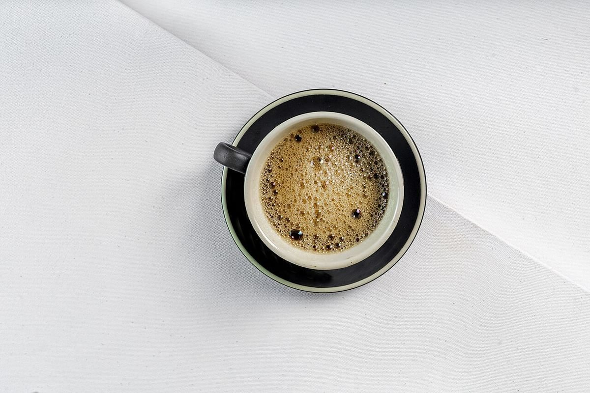

自家焙煎コーヒー / 宮城県名取市
Leka焙煎所
「Coffee 焙煎所 Leka」のご案内ページです。営業時間やメニューなど、詳しいことは準備中。まずはInstagramをのぞいてみてください。


制作側の連想
荷物の中の、ぷちぷち。
このページは、荷づくりで使う気泡緩衝材(いわゆる「ぷちぷち」)の見た目を借りて作りました。丸い粒がひと列に並び、ひとつ押すとぺしゃんと平らになります。ページ上部の丸いボタンが5粒、いま開いているページの粒はつぶれた状態です。制作側の連想で、お店の理念・由来とはまったく無関係です。
ぷちぷちの一列(イメージ)
ひと粒ずつ、ならべてみました。
豆から一杯までを一列の粒に見立てた、制作側の構成です。写真はフリー素材のイメージで、お店のものではありません。
- 一粒め

麻袋からこぼれる生豆(イメージ) - 二粒め
艶のある焙煎豆の接写(イメージ) - 三粒め

白い器に入った挽いた粉と豆ひと粒(イメージ) - 四粒め

ソーサーに載った白い小さなカップ(イメージ) - 五粒め

木のテーブルに置いた青緑のマグカップ(イメージ)
ご案内
確認できていること
| 所在地 | 〒981-1242 宮城県名取市高舘吉田内舘1-1 |
|---|---|
| 電話 | 080-5338-1179 |
| 営業時間 | 準備中 |
| 定休日 | 準備中 |
| ご予約 | 準備中 |
| 駐車場 | 準備中 |
| SNS | Instagram @coffee_leka |
所在地・電話番号・Instagramのみ確認済みです。そのほかは準備中です。